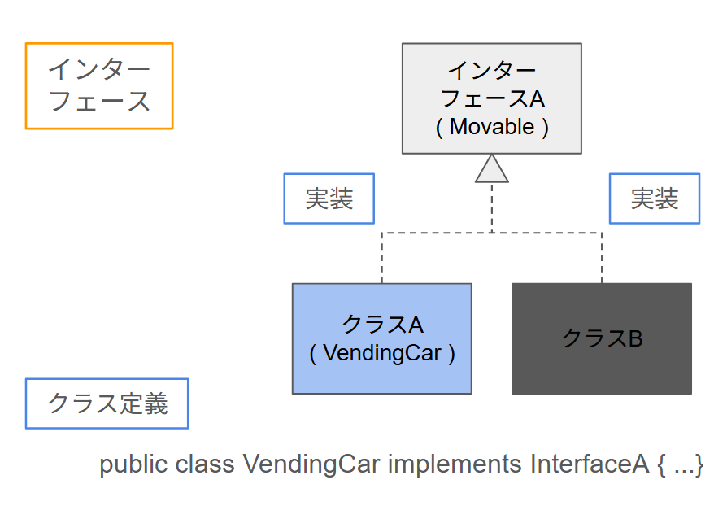
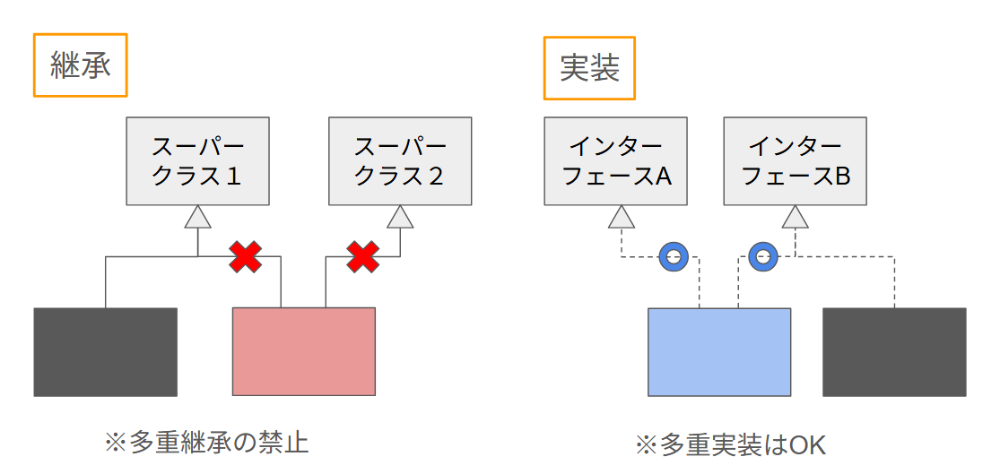

【テキスト】 オブジェクト指向⑤ ～インタフェース～
<div style="max-width: 800px; margin: 0 auto; font-family: 'Helvetica Neue', Arial, 'Hiragino Kaku Gothic ProN', 'Hiragino Sans', Meiryo, sans-serif; line-height: 1.6; color: #333; padding: 20px; border: 1px solid #eee; background-color: #fff;">
<h1 style="padding-left: 10px; background-color: #f0f8ff; color: #0033ff; font-size: 24px; margin-bottom: 30px;">オブジェクト指向学習カリキュラム</h1>
<p style="margin-bottom: 10px;"><strong>インタフェース</strong>（第13回）</p>

<section style="margin-bottom: 30px;">
<h2 style="border-left: 5px solid #0033ff; padding-left: 10px; color: #0033ff; font-size: 18px; margin-bottom: 15px;">この単元の前に：抽象クラスの復習</h2>
<p style="margin-bottom: 10px;">前回は「抽象クラス」で、サブクラスに「必ずこのメソッドを実装してね」と任せるやり方を学びました。短くおさらいします。</p>
<h3 style="padding-left: 10px; color: #0033ff; font-size: 16px; margin-top: 15px; margin-bottom: 10px;">復習：前回までに学んだこと</h3>
<div style="background-color: #f0f8ff; padding: 20px; border-radius: 5px; border-left: 5px solid #0033ff;">
<ul style="padding-left: 20px; margin-bottom: 0;">
<li style="margin-bottom: 10px;"><strong>抽象クラス</strong> — <code style="font-family: monospace; background-color: #f5f5f5; padding: 1px 4px; border-radius: 3px;">abstract class</code> で宣言。1つでも抽象メソッドがあると、そのクラスは <code style="font-family: monospace; background-color: #f5f5f5; padding: 1px 4px; border-radius: 3px;">new</code> できない。</li>
<li style="margin-bottom: 10px;"><strong>抽象メソッド</strong> — 中身を書かず、サブクラスで「必ず実装する」ことを強制する。サブクラスでは <code style="font-family: monospace; background-color: #f5f5f5; padding: 1px 4px; border-radius: 3px;">extends</code> で1つだけ継承できる。</li>
<li><strong>実装したメソッド</strong> — オーバーライドするときは <code style="font-family: monospace; background-color: #f5f5f5; padding: 1px 4px; border-radius: 3px;">public</code> をつけておく（省略しても暗に public になる）。</li>
</ul>
</div>
<h3 style="padding-left: 10px; color: #0033ff; font-size: 16px; margin-top: 20px; margin-bottom: 10px;">この単元で学ぶこと</h3>
<p style="margin-bottom: 0;">この単元では「インタフェース」を学びます。抽象クラスを極限まで突き詰めた「メソッドの約束だけ」を表す仕組みで、次回の多態性の土台になります。</p>
</section>

<hr style="border: none; border-top: 1px solid #ccc; margin: 1.5em 0;">

<section style="margin-bottom: 30px;">
<h2 style="border-left: 5px solid #0033ff; padding-left: 10px; color: #0033ff; font-size: 18px; margin-bottom: 15px;">【1】具体的な学習目標</h2>
<p style="margin-bottom: 10px;">この単元を終えたとき、以下のことができればゴールです。</p>
<ul style="padding-left: 20px; margin: 0;">
<li style="margin-bottom: 10px;">インタフェースの役割（「このメソッドを必ず実装する」という約束だけを定義する）を説明できる。</li>
<li style="margin-bottom: 10px;"><code style="font-family: monospace; background-color: #f5f5f5; padding: 1px 4px; border-radius: 3px;">interface</code> と <code style="font-family: monospace; background-color: #f5f5f5; padding: 1px 4px; border-radius: 3px;">implements</code> の書き方を理解する。</li>
<li style="margin-bottom: 10px;">「クラスは1つしか継承できないが、インタフェースは複数実装できる」ことを理解する。</li>
</ul>
</section>

<hr style="border: none; border-top: 1px solid #ccc; margin: 1.5em 0;">

<section style="margin-bottom: 30px;">
<h2 style="border-left: 5px solid #0033ff; padding-left: 10px; color: #0033ff; font-size: 18px; margin-bottom: 15px;">【2】導入：メソッドの約束だけを切り出したものがインタフェース</h2>
<div style="background-color: #f2f2f2; padding: 15px; border-radius: 5px; border-left: 5px solid #888888; margin-bottom: 10px;">
<p style="margin: 0;"><strong>カバ先生：</strong>「前回は抽象クラスで、サブクラスに『必ずこのメソッドを実装してね』と任せましたね。それをさらに進めると、中身がまったくないメソッドの『形』だけが並んだものになります。Java では、それを<strong>インタフェース</strong>として、クラスとは別に定義します。」</p>
</div>
<div style="background-color: #e6f4ff; padding: 15px; border-radius: 5px; border-left: 5px solid #4da6ff;">
<p style="margin: 0;"><strong>ユウタ：</strong>「インタフェースには、どんなメソッドを書けばいいか、名前と引数と戻り値の<strong>約束だけ</strong>を書く、という理解でいいですか？」</p>
</div>
<div style="background-color: #f2f2f2; padding: 15px; border-radius: 5px; border-left: 5px solid #888888; margin-bottom: 10px;">
<p style="margin: 0;"><strong>カバ先生：</strong>「その通りです。そして大事な違いがもう一つ。クラスは <code style="font-family: monospace; background-color: #f5f5f5; padding: 1px 4px; border-radius: 3px;">extends</code> で<strong>1つしか継承できません</strong>が、インタフェースは <code style="font-family: monospace; background-color: #f5f5f5; padding: 1px 4px; border-radius: 3px;">implements</code> で<strong>複数実装できます</strong>。だから『販売できる』と『動かせる』を別々のインタフェースにして、1つのクラスが両方実装する、といったことができます。」</p>
</div>
<div style="background-color: #ffe6f0; padding: 15px; border-radius: 5px; border-left: 5px solid #e8a0b0;">
<p style="margin: 0;"><strong>ナナコ：</strong>「実装するとき、そのメソッドには <code style="font-family: monospace; background-color: #f5f5f5; padding: 1px 4px; border-radius: 3px;">public</code> をつける、と前回習いました。インタフェースで決めたメソッドをクラスで実装するときも、同じように <code style="font-family: monospace; background-color: #f5f5f5; padding: 1px 4px; border-radius: 3px;">public</code> でオーバーライドする、という理解でよいでしょうか。」</p>
</div>
<div style="background-color: #f2f2f2; padding: 15px; border-radius: 5px; border-left: 5px solid #888888;">
<p style="margin: 0;"><strong>カバ先生：</strong>「はい。インタフェースのメソッドは省略すると <code style="font-family: monospace; background-color: #f5f5f5; padding: 1px 4px; border-radius: 3px;">public abstract</code> として扱われ、実装する側でも <code style="font-family: monospace; background-color: #f5f5f5; padding: 1px 4px; border-radius: 3px;">public</code> を省略すると暗に付きます。読みやすさのため、実装側には <code style="font-family: monospace; background-color: #f5f5f5; padding: 1px 4px; border-radius: 3px;">public</code> を明示しておくといいですよ。」</p>
</div>
</section>

<hr style="border: none; border-top: 1px solid #ccc; margin: 1.5em 0;">

<section style="margin-bottom: 30px;">
<h2 style="border-left: 5px solid #0033ff; padding-left: 10px; color: #0033ff; font-size: 18px; margin-bottom: 15px;">【3】インタフェース：メソッドの形だけを定義する</h2>
<p style="margin-bottom: 10px;">インタフェースは、<strong>メソッドの「名前・引数・戻り値」の約束だけ</strong>を書きます。中身（本体）は書きません。クラスがそのインタフェースを <code style="font-family: monospace; background-color: #f5f5f5; padding: 1px 4px; border-radius: 3px;">implements</code> すると、約束したメソッドをすべて実装する必要があります。</p>
<ul style="padding-left: 20px;">
<li style="margin-bottom: 10px;"><strong>interface 名前</strong> — インタフェースの宣言。中にはメソッドの形（シグネチャ）だけを書く。</li>
<li style="margin-bottom: 10px;"><strong>implements インタフェース名</strong> — クラスが「このインタフェースで決めたメソッドを実装します」と宣言する。複数書ける（<code style="font-family: monospace; background-color: #f5f5f5; padding: 1px 4px; border-radius: 3px;">implements A, B, C</code>）。</li>
<li style="margin-bottom: 10px;">インタフェースのメソッドは修飾子を省略すると <code style="font-family: monospace; background-color: #f5f5f5; padding: 1px 4px; border-radius: 3px;">public abstract</code> として扱われる。実装側では <code style="font-family: monospace; background-color: #f5f5f5; padding: 1px 4px; border-radius: 3px;">@Override</code> を付け、<code style="font-family: monospace; background-color: #f5f5f5; padding: 1px 4px; border-radius: 3px;">public</code> で実装する。</li>
</ul>

<div style="margin: 20px 0; text-align: center;">
<p style="margin: 0 0 8px 0; font-size: 14px; font-weight: bold; color: #0033ff;">図：インタフェースと実装の関係（1つのインタフェースを複数のクラスが実装）</p>

</div>

<h3 style="padding-left: 10px; color: #0033ff; font-size: 16px; margin-top: 20px; margin-bottom: 10px;">サンプル：「販売できる」を表すインタフェース CanSell</h3>
<p style="margin-bottom: 10px;">自販機が「販売する」という振る舞いを約束するために、<code style="font-family: monospace; background-color: #f5f5f5; padding: 1px 4px; border-radius: 3px;">CanSell</code> インタフェースを定義し、<code style="font-family: monospace; background-color: #f5f5f5; padding: 1px 4px; border-radius: 3px;">VendMachine</code> が実装する例です。</p>
<pre style="font-family: monospace; background-color: #fdf5e6; color: #333; padding: 15px; border-radius: 5px; border: 1px solid #e1dbbd; overflow-x: auto;"><span style="color: #666;">// インタフェース：売るという振る舞いの約束だけ</span>
<span style="color: #0033ff;">public interface</span> CanSell {
    <span style="color: #666;">// このメソッドを実装するクラスは「売る」ことができる</span>
    <span style="color: #0033ff;">void</span> sell();
}

<span style="color: #666;">// VendMachine が CanSell を実装する</span>
<span style="color: #0033ff;">public class</span> VendMachine <span style="color: #0033ff;">implements</span> CanSell {
    <span style="color: #0033ff;">private</span> String drinkName;
    <span style="color: #0033ff;">private</span> <span style="color: #0033ff;">int</span> stock;

    <span style="color: #0033ff;">public</span> VendMachine(String drinkName, <span style="color: #0033ff;">int</span> stock) {
        <span style="color: #0033ff;">this</span>.drinkName = drinkName;
        <span style="color: #0033ff;">this</span>.stock = stock;
    }

    <span style="color: #0033ff;">@Override</span>
    <span style="color: #0033ff;">public</span> <span style="color: #0033ff;">void</span> sell() {
        <span style="color: #0033ff;">if</span> (stock >= 1) {
            stock--;
            System.out.println(drinkName + <span style="color: #cc0000;">"を購入しました"</span>);
        } <span style="color: #0033ff;">else</span> {
            System.out.println(<span style="color: #cc0000;">"在庫がありません"</span>);
        }
    }
}</pre>
<p style="margin-bottom: 0;">このように <code style="font-family: monospace; background-color: #f5f5f5; padding: 1px 4px; border-radius: 3px;">implements CanSell</code> と書くと、<code style="font-family: monospace; background-color: #f5f5f5; padding: 1px 4px; border-radius: 3px;">sell()</code> を必ず実装する必要があります。次回の多態性では、<code style="font-family: monospace; background-color: #f5f5f5; padding: 1px 4px; border-radius: 3px;">CanSell</code> 型の変数に自販機や別の「売れるもの」を入れて、同じ <code style="font-family: monospace; background-color: #f5f5f5; padding: 1px 4px; border-radius: 3px;">sell()</code> を呼ぶ、という扱いを学びます。</p>
</section>

<hr style="border: none; border-top: 1px solid #ccc; margin: 1.5em 0;">

<section style="margin-bottom: 30px;">
<h2 style="border-left: 5px solid #0033ff; padding-left: 10px; color: #0033ff; font-size: 18px; margin-bottom: 15px;">【4】抽象クラスとインタフェースの違い（整理）</h2>
<div style="margin: 20px 0; text-align: center;">
<p style="margin: 0 0 8px 0; font-size: 14px; font-weight: bold; color: #0033ff;">図：多重継承の禁止と多重実装（継承は1つだけ、実装は複数OK）</p>

</div>
<table style="border-collapse: collapse; margin-top: 10px; margin-bottom: 15px;" border="1" cellspacing="0" cellpadding="8">
<tbody>
<tr style="background-color: #f0f8ff;">
<th>項目</th>
<th>抽象クラス</th>
<th>インタフェース</th>
</tr>
<tr>
<td>キーワード</td>
<td><code style="font-family: monospace; background-color: #f5f5f5; padding: 1px 4px; border-radius: 3px;">extends</code>（継承）</td>
<td><code style="font-family: monospace; background-color: #f5f5f5; padding: 1px 4px; border-radius: 3px;">implements</code>（実装）</td>
</tr>
<tr>
<td>数</td>
<td>1つだけ（単一継承）</td>
<td>複数可能（<code style="font-family: monospace; background-color: #f5f5f5; padding: 1px 4px; border-radius: 3px;">implements A, B</code>）</td>
</tr>
<tr>
<td>中身</td>
<td>抽象メソッドに加え、フィールドや具象メソッドも持てる</td>
<td>メソッドの形（約束）だけ。フィールドは定数のみ</td>
</tr>
<tr>
<td>使い分けの目安</td>
<td>共通の土台があり、is-a の関係がはっきりしている</td>
<td>「この振る舞いを必ず持つ」という約束だけほしい、複数の役割を足したい</td>
</tr>
</tbody>
</table>
</section>

<hr style="border: none; border-top: 1px solid #ccc; margin: 1.5em 0;">

<section style="margin-bottom: 30px;">
<h2 style="border-left: 5px solid #0033ff; padding-left: 10px; color: #0033ff; font-size: 18px; margin-bottom: 15px;">【5】練習問題</h2>
<div>
<strong>【問題】インタフェースを定義し、クラスで実装する</strong><br>
「鳴く」という振る舞いを表すインタフェース <code style="font-family: monospace; background-color: #f5f5f5; padding: 1px 4px; border-radius: 3px;">CanCry</code> を定義し、<code style="font-family: monospace; background-color: #f5f5f5; padding: 1px 4px; border-radius: 3px;">void cry();</code> だけを持たせてください。続けて、<code style="font-family: monospace; background-color: #f5f5f5; padding: 1px 4px; border-radius: 3px;">Dog</code> クラスが <code style="font-family: monospace; background-color: #f5f5f5; padding: 1px 4px; border-radius: 3px;">implements CanCry</code> し、<code style="font-family: monospace; background-color: #f5f5f5; padding: 1px 4px; border-radius: 3px;">cry()</code> で「ワンワン」と表示するように実装してください。
</div>
<div style="border-bottom: 1px solid #ccc; margin: 10px 0;"></div>
<details style="margin: 0.5em 0;">
<summary style="cursor: pointer; font-weight: bold; color: #555;">▶ ヒント</summary>
<p><code style="font-family: monospace; background-color: #f5f5f5; padding: 1px 4px; border-radius: 3px;">public interface CanCry { void cry(); }</code> とし、<code style="font-family: monospace; background-color: #f5f5f5; padding: 1px 4px; border-radius: 3px;">public class Dog implements CanCry</code> で <code style="font-family: monospace; background-color: #f5f5f5; padding: 1px 4px; border-radius: 3px;">@Override public void cry() { ... }</code> を実装します。</p>
</details>
</section>

<hr style="border: none; border-top: 1px solid #ccc; margin: 1.5em 0;">

<section style="margin-bottom: 30px;">
<h2 style="border-left: 5px solid #0033ff; padding-left: 10px; color: #0033ff; font-size: 18px; margin-bottom: 15px;">【6】まとめ</h2>
<ul style="padding-left: 20px;">
<li style="margin-bottom: 10px;"><strong>インタフェース</strong> — メソッドの「形」だけを定義する。中身は書かず、実装するクラスに任せる。</li>
<li style="margin-bottom: 10px;"><code style="font-family: monospace; background-color: #f5f5f5; padding: 1px 4px; border-radius: 3px;">implements</code> で複数のインタフェースを実装できる。クラスの <code style="font-family: monospace; background-color: #f5f5f5; padding: 1px 4px; border-radius: 3px;">extends</code> は1つだけ。</li>
<li style="margin-bottom: 10px;">実装したメソッドには <code style="font-family: monospace; background-color: #f5f5f5; padding: 1px 4px; border-radius: 3px;">public</code> をつけておく。次回は多態性（同じ型で受け、実際のインスタンスに応じて振る舞いが変わる）を学びます。</li>
</ul>
</section>
</div>
